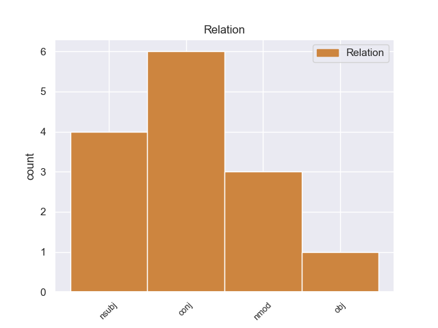
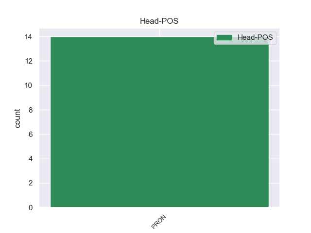
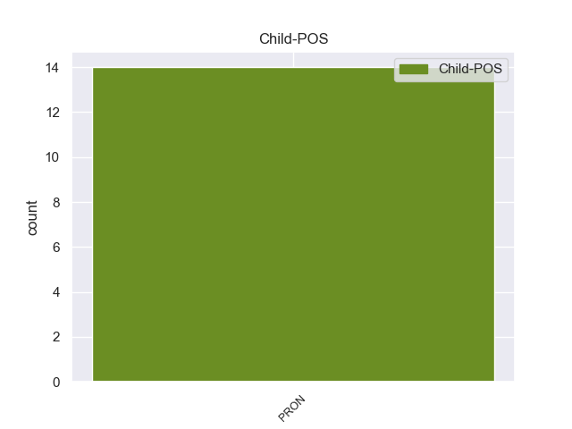

Distribution of features within this leaf



Agreement Rules sorted by frequency.
- When the dependent token is the conjunct(conj) of the head token,
1 A _ _ _ _ 0 _ _ _
2 la _ _ _ _ 0 _ _ _
3 amenaza _ _ _ _ 0 _ _ _
4 de _ _ _ _ 0 _ _ _
5 los _ _ _ _ 0 _ _ _
6 piratas _ _ _ _ 0 _ _ _
7 se _ _ _ _ 0 _ _ _
8 une _ _ _ _ 0 _ _ _
9 la él PRON _ Case=Acc|Gender=Fem|Number=Sing|Person=3|PrepCase=Npr|PronType=Prs 0 _ _ _
10 de _ _ _ _ 0 _ _ _
11 el _ _ _ _ 0 _ _ _
12 propio _ _ _ _ 0 _ _ _
13 Vitelio _ _ _ _ 0 _ _ _
14 y _ _ _ _ 0 _ _ _
15 la él PRON _ Case=Acc|Gender=Fem|Number=Sing|Person=3|PrepCase=Npr|PronType=Prs 9 conj _ _
16 de _ _ _ _ 0 _ _ _
17 un _ _ _ _ 0 _ _ _
18 traidor _ _ _ _ 0 _ _ _
19 que _ _ _ _ 0 _ _ _
20 mantiene _ _ _ _ 0 _ _ _
21 informados _ _ _ _ 0 _ _ _
22 a _ _ _ _ 0 _ _ _
23 los _ _ _ _ 0 _ _ _
24 piratas _ _ _ _ 0 _ _ _
25 de _ _ _ _ 0 _ _ _
26 todos _ _ _ _ 0 _ _ _
27 los _ _ _ _ 0 _ _ _
28 movimientos _ _ _ _ 0 _ _ _
29 de _ _ _ _ 0 _ _ _
30 la _ _ _ _ 0 _ _ _
31 flota _ _ _ _ 0 _ _ _
32 romana _ _ _ _ 0 _ _ _
33 . _ _ _ _ 0 _ _ _
1 En _ _ _ _ 0 _ _ _
2 la _ _ _ _ 0 _ _ _
3 provincia _ _ _ _ 0 _ _ _
4 vecina _ _ _ _ 0 _ _ _
5 vivía _ _ _ _ 0 _ _ _
6 con _ _ _ _ 0 _ _ _
7 tres _ _ _ _ 0 _ _ _
8 amigas _ _ _ _ 0 _ _ _
9 y _ _ _ _ 0 _ _ _
10 se _ _ _ _ 0 _ _ _
11 comunicaba _ _ _ _ 0 _ _ _
12 cada _ _ _ _ 0 _ _ _
13 tanto _ _ _ _ 0 _ _ _
14 con _ _ _ _ 0 _ _ _
15 su _ _ _ _ 0 _ _ _
16 familia _ _ _ _ 0 _ _ _
17 , _ _ _ _ 0 _ _ _
18 pero _ _ _ _ 0 _ _ _
19 ellos él PRON _ Case=Acc,Nom|Gender=Masc|Number=Plur|Person=3|PronType=Prs 0 _ _ _
20 con _ _ _ _ 0 _ _ _
21 ella él PRON _ Case=Acc,Nom|Gender=Fem|Number=Sing|Person=3|PronType=Prs 19 nmod _ _
22 no _ _ _ _ 0 _ _ _
23 , _ _ _ _ 0 _ _ _
24 porque _ _ _ _ 0 _ _ _
25 la _ _ _ _ 0 _ _ _
26 joven _ _ _ _ 0 _ _ _
27 prefirió _ _ _ _ 0 _ _ _
28 no _ _ _ _ 0 _ _ _
29 exponer _ _ _ _ 0 _ _ _
30 a _ _ _ _ 0 _ _ _
31 sus _ _ _ _ 0 _ _ _
32 cercanos _ _ _ _ 0 _ _ _
33 . _ _ _ _ 0 _ _ _
1 Personalmente _ _ _ _ 0 _ _ _
2 recomiendo _ _ _ _ 0 _ _ _
3 los _ _ _ _ 0 _ _ _
4 reservas _ _ _ _ 0 _ _ _
5 de _ _ _ _ 0 _ _ _
6 2002 _ _ _ _ 0 _ _ _
7 y _ _ _ _ 0 _ _ _
8 2003 _ _ _ _ 0 _ _ _
9 , _ _ _ _ 0 _ _ _
10 los _ _ _ _ 0 _ _ _
11 crianza _ _ _ _ 0 _ _ _
12 de _ _ _ _ 0 _ _ _
13 2005 _ _ _ _ 0 _ _ _
14 salieron _ _ _ _ 0 _ _ _
15 muy _ _ _ _ 0 _ _ _
16 buenos _ _ _ _ 0 _ _ _
17 , _ _ _ _ 0 _ _ _
18 aunque _ _ _ _ 0 _ _ _
19 los él PRON _ Case=Acc|Gender=Masc|Number=Plur|Person=3|PrepCase=Npr|PronType=Prs 24 nsubj _ _
20 de _ _ _ _ 0 _ _ _
21 2006 _ _ _ _ 0 _ _ _
22 no _ _ _ _ 0 _ _ _
23 me _ _ _ _ 0 _ _ _
24 lo él PRON _ Case=Acc|Gender=Masc|Number=Sing|Person=3|PrepCase=Npr|PronType=Prs 0 _ _ _
25 parecieron _ _ _ _ 0 _ _ _
26 inicialmente _ _ _ _ 0 _ _ _
27 , _ _ _ _ 0 _ _ _
28 no _ _ _ _ 0 _ _ _
29 obstante _ _ _ _ 0 _ _ _
30 tienen _ _ _ _ 0 _ _ _
31 bastante _ _ _ _ 0 _ _ _
32 tiempo _ _ _ _ 0 _ _ _
33 en _ _ _ _ 0 _ _ _
34 barrica _ _ _ _ 0 _ _ _
35 y _ _ _ _ 0 _ _ _
36 dándo _ _ _ _ 0 _ _ _
37 les _ _ _ _ 0 _ _ _
38 tiempo _ _ _ _ 0 _ _ _
39 en _ _ _ _ 0 _ _ _
40 botella _ _ _ _ 0 _ _ _
41 mejoraron _ _ _ _ 0 _ _ _
42 mucho _ _ _ _ 0 _ _ _
43 desde _ _ _ _ 0 _ _ _
44 noviembre _ _ _ _ 0 _ _ _
45 de _ _ _ _ 0 _ _ _
46 2009 _ _ _ _ 0 _ _ _
47 a _ _ _ _ 0 _ _ _
48 marzo _ _ _ _ 0 _ _ _
49 2010 _ _ _ _ 0 _ _ _
50 , _ _ _ _ 0 _ _ _
51 y _ _ _ _ 0 _ _ _
52 es _ _ _ _ 0 _ _ _
53 probable _ _ _ _ 0 _ _ _
54 que _ _ _ _ 0 _ _ _
55 sigan _ _ _ _ 0 _ _ _
56 mejorando _ _ _ _ 0 _ _ _
57 . _ _ _ _ 0 _ _ _
Disagree Examples:
1 Amaya _ _ _ _ 0 _ _ _
2 refirió _ _ _ _ 0 _ _ _
3 que _ _ _ _ 0 _ _ _
4 a _ _ _ _ 0 _ _ _
5 nivel _ _ _ _ 0 _ _ _
6 nacional _ _ _ _ 0 _ _ _
7 hay _ _ _ _ 0 _ _ _
8 7,870 _ _ _ _ 0 _ _ _
9 trabajadores _ _ _ _ 0 _ _ _
10 no _ _ _ _ 0 _ _ _
11 docentes _ _ _ _ 0 _ _ _
12 , _ _ _ _ 0 _ _ _
13 quienes _ _ _ _ 0 _ _ _
14 " _ _ _ _ 0 _ _ _
15 hemos _ _ _ _ 0 _ _ _
16 decidido _ _ _ _ 0 _ _ _
17 que _ _ _ _ 0 _ _ _
18 si _ _ _ _ 0 _ _ _
19 vamos _ _ _ _ 0 _ _ _
20 a _ _ _ _ 0 _ _ _
21 paro _ _ _ _ 0 _ _ _
22 el _ _ _ _ 0 _ _ _
23 lunes _ _ _ _ 0 _ _ _
24 ( _ _ _ _ 0 _ _ _
25 hoy _ _ _ _ 0 _ _ _
26 ) _ _ _ _ 0 _ _ _
27 se _ _ _ _ 0 _ _ _
28 afectará _ _ _ _ 0 _ _ _
29 las _ _ _ _ 0 _ _ _
30 clases _ _ _ _ 0 _ _ _
31 , _ _ _ _ 0 _ _ _
32 porque _ _ _ _ 0 _ _ _
33 nosotros yo PRON _ Case=Acc,Nom|Gender=Masc|Number=Plur|Person=1|PronType=Prs 35 nsubj _ _
34 somos _ _ _ _ 0 _ _ _
35 los él PRON _ Case=Acc|Gender=Masc|Number=Plur|Person=3|PrepCase=Npr|PronType=Prs 0 _ _ _
36 que _ _ _ _ 0 _ _ _
37 estamos _ _ _ _ 0 _ _ _
38 en _ _ _ _ 0 _ _ _
39 los _ _ _ _ 0 _ _ _
40 centros _ _ _ _ 0 _ _ _
41 educativos _ _ _ _ 0 _ _ _
42 " _ _ _ _ 0 _ _ _
43 , _ _ _ _ 0 _ _ _
44 sentenció _ _ _ _ 0 _ _ _
45 . _ _ _ _ 0 _ _ _
1 " _ _ _ _ 0 _ _ _
2 El _ _ _ _ 0 _ _ _
3 conflicto _ _ _ _ 0 _ _ _
4 es _ _ _ _ 0 _ _ _
5 entre _ _ _ _ 0 _ _ _
6 los _ _ _ _ 0 _ _ _
7 gremios _ _ _ _ 0 _ _ _
8 y _ _ _ _ 0 _ _ _
9 son _ _ _ _ 0 _ _ _
10 ellos él PRON _ Case=Acc,Nom|Gender=Masc|Number=Plur|Person=3|PronType=Prs 11 nsubj _ _
11 los él PRON _ Case=Acc|Gender=Masc|Number=Plur|Person=3|PrepCase=Npr|PronType=Prs 0 _ _ _
12 que _ _ _ _ 0 _ _ _
13 tienen _ _ _ _ 0 _ _ _
14 que _ _ _ _ 0 _ _ _
15 poner _ _ _ _ 0 _ _ _
16 se _ _ _ _ 0 _ _ _
17 de _ _ _ _ 0 _ _ _
18 acuerdo _ _ _ _ 0 _ _ _
19 y _ _ _ _ 0 _ _ _
20 plantear _ _ _ _ 0 _ _ _
21 la _ _ _ _ 0 _ _ _
22 solicitud _ _ _ _ 0 _ _ _
23 a _ _ _ _ 0 _ _ _
24 el _ _ _ _ 0 _ _ _
25 cuerpo _ _ _ _ 0 _ _ _
26 " _ _ _ _ 0 _ _ _
27 concluyó _ _ _ _ 0 _ _ _
28 . _ _ _ _ 0 _ _ _
1 Los _ _ _ _ 0 _ _ _
2 combates _ _ _ _ 0 _ _ _
3 provocaron _ _ _ _ 0 _ _ _
4 la _ _ _ _ 0 _ _ _
5 muerte _ _ _ _ 0 _ _ _
6 de _ _ _ _ 0 _ _ _
7 varias _ _ _ _ 0 _ _ _
8 personas _ _ _ _ 0 _ _ _
9 , _ _ _ _ 0 _ _ _
10 entre _ _ _ _ 0 _ _ _
11 ellas él PRON _ Case=Acc,Nom|Gender=Fem|Number=Plur|Person=3|PronType=Prs 12 nmod _ _
12 la él PRON _ Case=Acc|Gender=Fem|Number=Sing|Person=3|PrepCase=Npr|PronType=Prs 0 _ _ _
13 de _ _ _ _ 0 _ _ _
14 el _ _ _ _ 0 _ _ _
15 embajador _ _ _ _ 0 _ _ _
16 estadounidense _ _ _ _ 0 _ _ _
17 en _ _ _ _ 0 _ _ _
18 el _ _ _ _ 0 _ _ _
19 país _ _ _ _ 0 _ _ _
20 africano _ _ _ _ 0 _ _ _
21 , _ _ _ _ 0 _ _ _
22 Christopher _ _ _ _ 0 _ _ _
23 Stevens _ _ _ _ 0 _ _ _
24 , _ _ _ _ 0 _ _ _
25 así _ _ _ _ 0 _ _ _
26 como _ _ _ _ 0 _ _ _
27 la _ _ _ _ 0 _ _ _
28 de _ _ _ _ 0 _ _ _
29 varios _ _ _ _ 0 _ _ _
30 soldados _ _ _ _ 0 _ _ _
31 y _ _ _ _ 0 _ _ _
32 funcionarios _ _ _ _ 0 _ _ _
33 . _ _ _ _ 0 _ _ _
1 A _ _ _ _ 0 _ _ _
2 mi _ _ _ _ 0 _ _ _
3 me _ _ _ _ 0 _ _ _
4 liaron _ _ _ _ 0 _ _ _
5 para _ _ _ _ 0 _ _ _
6 ir _ _ _ _ 0 _ _ _
7 a _ _ _ _ 0 _ _ _
8 una _ _ _ _ 0 _ _ _
9 entrevista _ _ _ _ 0 _ _ _
10 con _ _ _ _ 0 _ _ _
11 uno _ _ _ _ 0 _ _ _
12 de _ _ _ _ 0 _ _ _
13 sus _ _ _ _ 0 _ _ _
14 clientes _ _ _ _ 0 _ _ _
15 cuando _ _ _ _ 0 _ _ _
16 les _ _ _ _ 0 _ _ _
17 dije _ _ _ _ 0 _ _ _
18 que _ _ _ _ 0 _ _ _
19 me _ _ _ _ 0 _ _ _
20 resultaba _ _ _ _ 0 _ _ _
21 imposible _ _ _ _ 0 _ _ _
22 por _ _ _ _ 0 _ _ _
23 otros _ _ _ _ 0 _ _ _
24 compromisos _ _ _ _ 0 _ _ _
25 que _ _ _ _ 0 _ _ _
26 tenía _ _ _ _ 0 _ _ _
27 , _ _ _ _ 0 _ _ _
28 insistieron _ _ _ _ 0 _ _ _
29 tanto _ _ _ _ 0 _ _ _
30 que _ _ _ _ 0 _ _ _
31 cedí _ _ _ _ 0 _ _ _
32 para _ _ _ _ 0 _ _ _
33 después _ _ _ _ 0 _ _ _
34 ser _ _ _ _ 0 _ _ _
35 ellos él PRON _ Case=Acc,Nom|Gender=Masc|Number=Plur|Person=3|PronType=Prs 36 nsubj _ _
36 los él PRON _ Case=Acc|Gender=Masc|Number=Plur|Person=3|PrepCase=Npr|PronType=Prs 0 _ _ _
37 que _ _ _ _ 0 _ _ _
38 me _ _ _ _ 0 _ _ _
39 dejaron _ _ _ _ 0 _ _ _
40 tirado _ _ _ _ 0 _ _ _
41 porque _ _ _ _ 0 _ _ _
42 ya _ _ _ _ 0 _ _ _
43 habían _ _ _ _ 0 _ _ _
44 cubierto _ _ _ _ 0 _ _ _
45 el _ _ _ _ 0 _ _ _
46 puesto _ _ _ _ 0 _ _ _
47 sin _ _ _ _ 0 _ _ _
48 avisar _ _ _ _ 0 _ _ _
49 me _ _ _ _ 0 _ _ _
50 . _ _ _ _ 0 _ _ _
1 Estos _ _ _ _ 0 _ _ _
2 comentaban _ _ _ _ 0 _ _ _
3 que _ _ _ _ 0 _ _ _
4 Pilar _ _ _ _ 0 _ _ _
5 solía _ _ _ _ 0 _ _ _
6 decir _ _ _ _ 0 _ _ _
7 : _ _ _ _ 0 _ _ _
8 " _ _ _ _ 0 _ _ _
9 yo _ _ _ _ 0 _ _ _
10 no _ _ _ _ 0 _ _ _
11 sé _ _ _ _ 0 _ _ _
12 ustedes _ _ _ _ 0 _ _ _
13 , _ _ _ _ 0 _ _ _
14 pero _ _ _ _ 0 _ _ _
15 lo él PRON _ Case=Acc|Gender=Masc|Number=Sing|Person=3|PrepCase=Npr|PronType=Prs 18 obj _ _
16 que _ _ _ _ 0 _ _ _
17 es _ _ _ _ 0 _ _ _
18 yo yo PRON _ Case=Nom|Number=Sing|Person=1|PronType=Prs 0 _ _ _
19 , _ _ _ _ 0 _ _ _
20 no _ _ _ _ 0 _ _ _
21 me _ _ _ _ 0 _ _ _
22 entero _ _ _ _ 0 _ _ _
23 de _ _ _ _ 0 _ _ _
24 nada _ _ _ _ 0 _ _ _
25 " _ _ _ _ 0 _ _ _
26 . _ _ _ _ 0 _ _ _